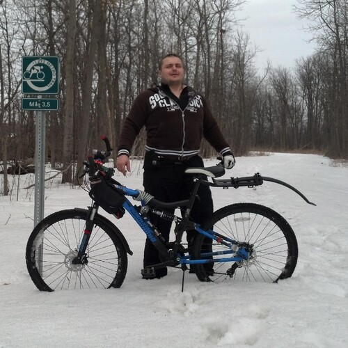
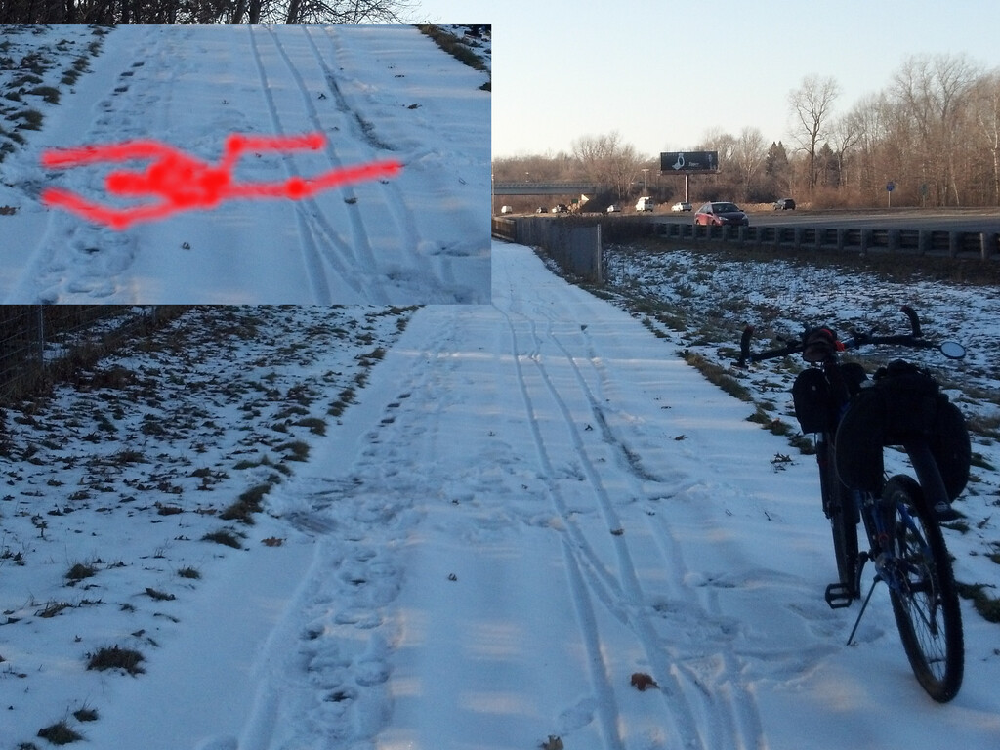

To The Trailblazers

To The Trailblazers
Snow is melting, 38 days until Spring,
and in just about 18 days everybody starts hitting the Appalachian Tail[1].
Spring weather could be here in as little,
as two weeks!
Crossing an I-275 Bicycle Trail overpass today,
I saw someone trying their wobbly luck.
While I am certain, they didn't get very far,
they are certainly not that far off.
It won't be long before the snow melts,
there is a great opportunity awaiting.
Who will become.
the 2021 I-275 Trail Blazer?

You don't have to go all the way,
just far enough...
To get the motorists wandering,
if you lost your darn mind.
I recommend a fat tire bicycle,
a thermos with tea and some sweet biscuits, coconut perhaps?
You will need, two sets of clothes,
and you need to wear them both at once.
Gloves, thick furry, fluffy,
impervious to adventurer winds gloves, very important.
And something to cover your face,
one way or another it will get cold.
Hopefully, you will ride on a sunny day,
and of course, you will need an audio book.
Perhaps you could find something about the Appalachian Tail,
be careful with books about expeditions to the poles, as someone always gets in horrible trouble.
And be sure to have a tire repair kit,
just in case.
You will have to take plenty of pictures,
they always come out very beautifully.
And, if you find any downed trees,
being the Trail Blazer that you are...
If the tree is small enough,
you're going to have to make a trip to a hardware store.
Find the sharpest saw,
and get the tree off the trail, if you can.
I fixed one of the downed trees after a particularly heavy rain,
and I still smile to this day, as I proudly pass by the stump I made.
It will feel like an expedition,
snow makes everything seem more distant.
Oh, and be careful about the frozen ice,
that may hide beneath snow from time to time.
It is one of my most fantastic memories of the trail,
when my front tire, simply slid from beneath my bike and I landed with a snowy thud.
Confused.
I could feel several motorists think to themselves,
"the dumba$$ just fell".

But I cared not,
for I was in the middle of a rough expedition.
Don't feel bad if you just day dream about it,
that is pretty good too, plus, it is always a plus if you don't have to pedal in cold winds.
But if you do go for it,
I hope you will blaze that trail, and many others, every year, from now on.
To The Trailblazers References
[1]: https://atcamp.org/atthruhikerreports.cfm